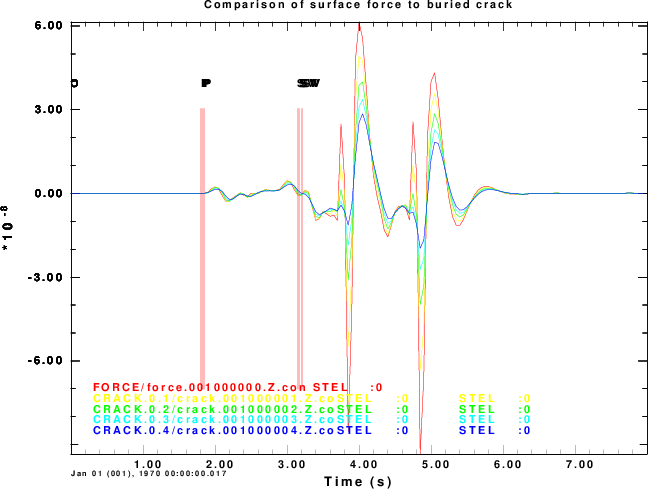
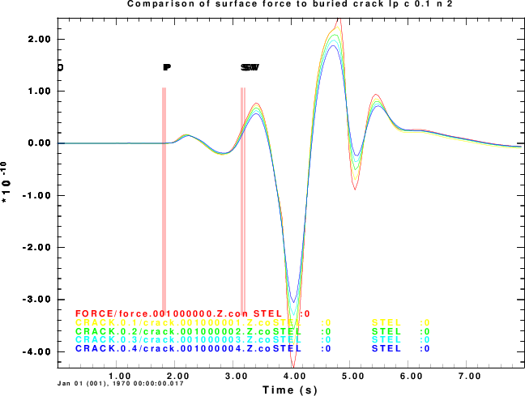
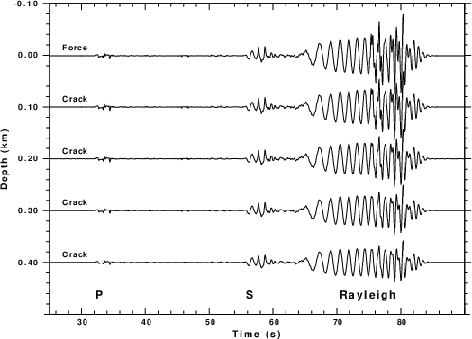

Mg S(omega)then the moment tensor source for the crack at depth HS is
# # Equation (16) of Day and McLaughlin(1991) has # # | A 0 0 | # Mg VP^2 | | # M(omega) = ---------------- | 0 A 0 | S(omega) # HS (i omega)^2 | | # | 0 0 B | # # # where A = lambda/(lambda + 2 mu ) = ( Vp^2 - 2 Vs^2 )/ Vp^2The source time function for the force is a combination of Dirac delta and Heaviside functions. In this implementation we use the gsac fg PAR2 tau command to create the double integral of this function as
this is convolved with the moment tensor synthetics and its second derivative is comvolved with the force synthetics.t H(t) + (t-T) H(t - T) - t2 H(t) - (t -T)2 H(t - T)
gunzip -c spall.tgz | tar xvf -After unpacking you will see the following files:
DOIT - this calls the other scripts
DOITREGIONAL - this computes the response for a force at the
free surface, and opening cracks at depths of
0.1, 0.2, 0.3 and 0.4 km
DOD2 - The DOD2, DOD2a and DOD4 make the plots
DOD2a
DOD4
EPSTOPNGWHITE - This script uses ImageMagick to make the PNG file
with a white backgroun
Source Depth(km) Excitation
Force 0 F3 = Mg = 9.80E+11 dyne
Crack 0.1 MXX = 8.130e+18 dyne-cm MYY = 8.130e+18 dyne-cm MZZ = 2.450e+19 dyne-cm
0.2 MXX = 4.065e+18 dyne-cm MYY = 4.065e+18 dyne-cm MZZ = 1.225e+19 dyne-cm
0.3 MXX = 2.710e+18 dyne-cm MYY = 2.710e+18 dyne-cm MZZ = 8.167e+18 dyne-cm
0.4 MXX = 2.032e+18 dyne-cm MYY = 2.032e+18 dyne-cm MZZ = 6.125e+18 dyne-cm
The first set of figures comapres the synthetics at a distance of 10 km. The P and S waves agree in amplitude, but the
Rayleigh wave does not. This is because the Day an McLaughlin (1991) derivation used just the first term of a Taylor series
expansion with depth, and the Rayleigh wae is very sensitive to depth.
|

Comparison of the surface force and buried opening crack synthetics. Note the body waves are modeled very well |

Comparison of the surface force and buried opening crack synthetics at an epicentral distance of 10 km after low-pass filtering at 0.1 Hz. Note the body waves are modeled very well and the surface wave agreement is much better, |
The next figure presents the synthetics at a regional distance of of 200 km. The traces are plotted with the same scale
as a function of source depth. There is very good agreement
|

Comparison of the surface force and buried opening crack synthetics at a distance of 200 km. Note the much better agreement because the Q oin the model has remoed many of the high frequencies. |